Organic Food Garden and Wildlife Haven
This organic food garden demonstrates how a productive food-growing space can be seamlessly integrated with wildlife-friendly design. The garden provides abundant fresh produce while creating valuable habitats for local wildlife, showing that food production and biodiversity can thrive together.
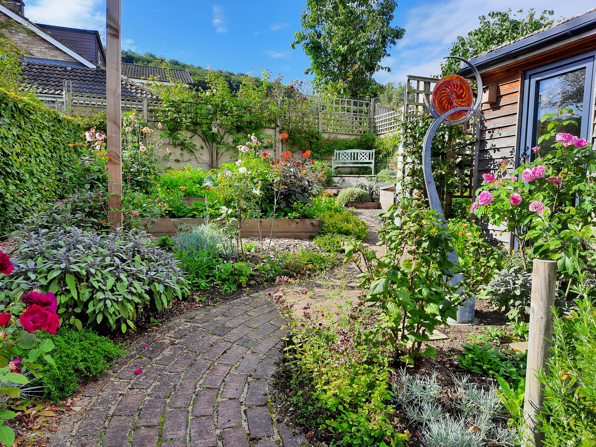
Garden Gallery

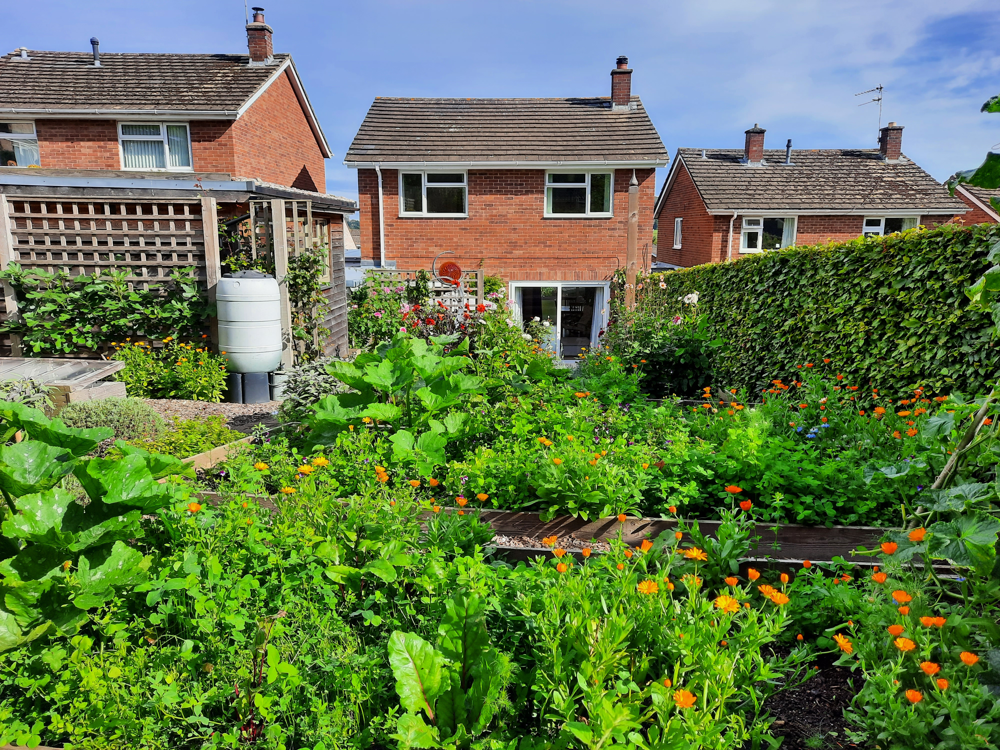

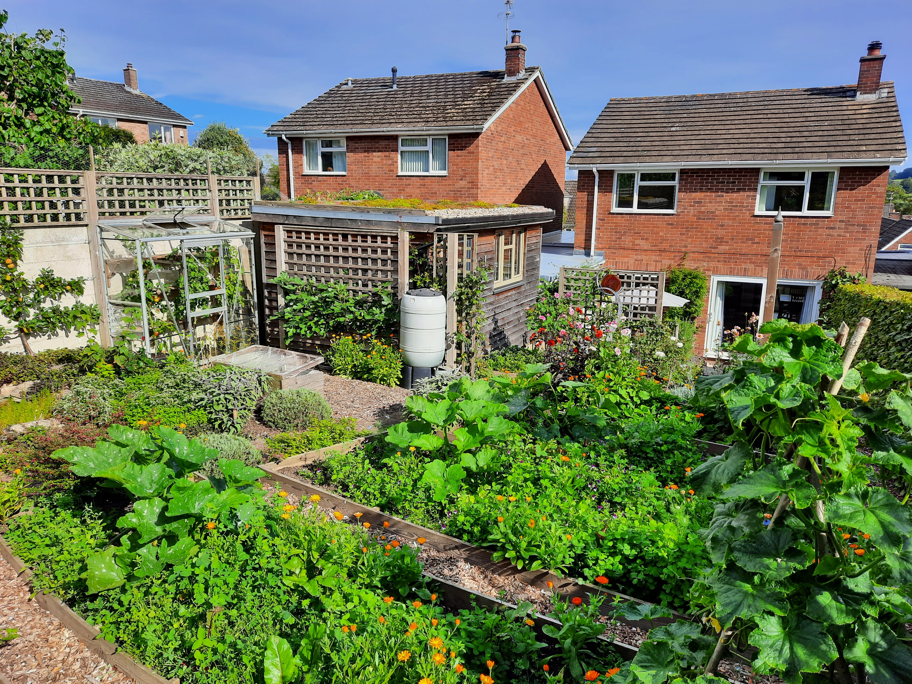
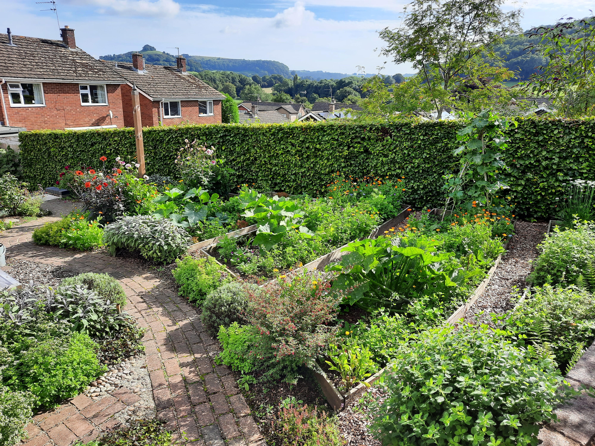
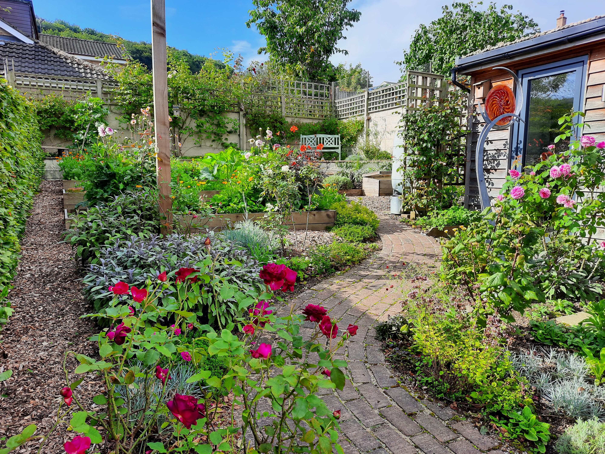

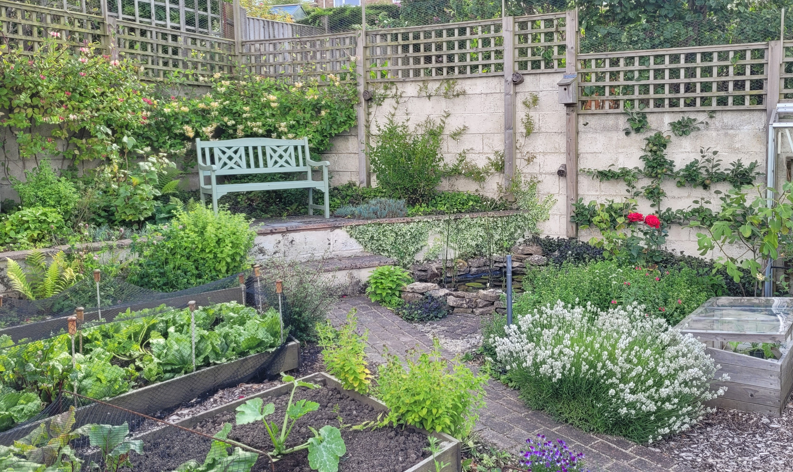

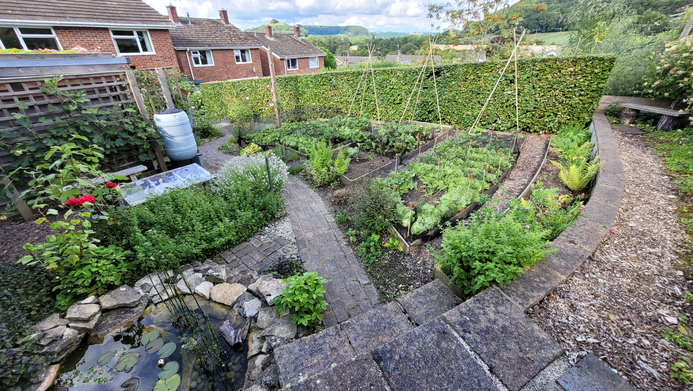
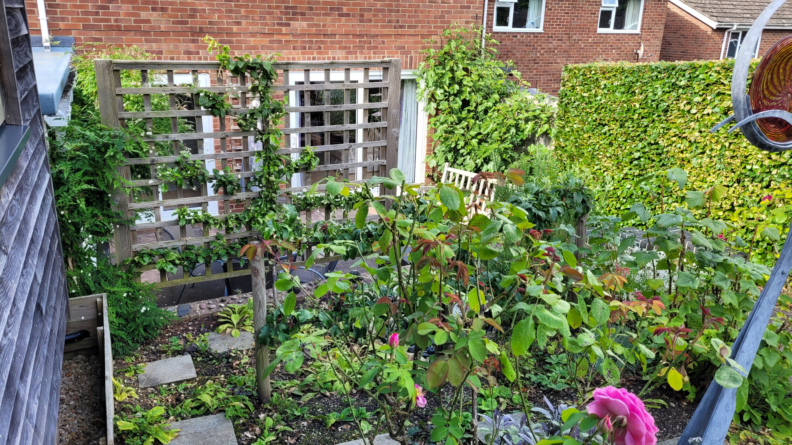
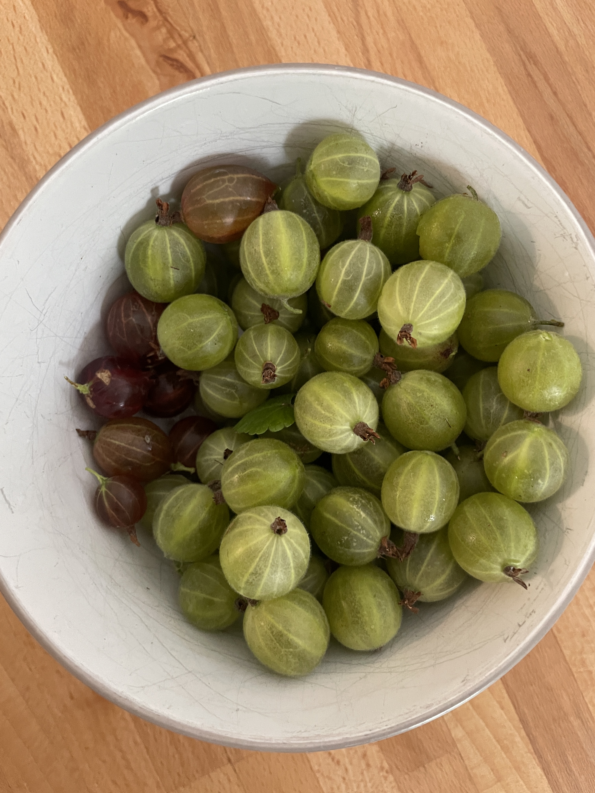
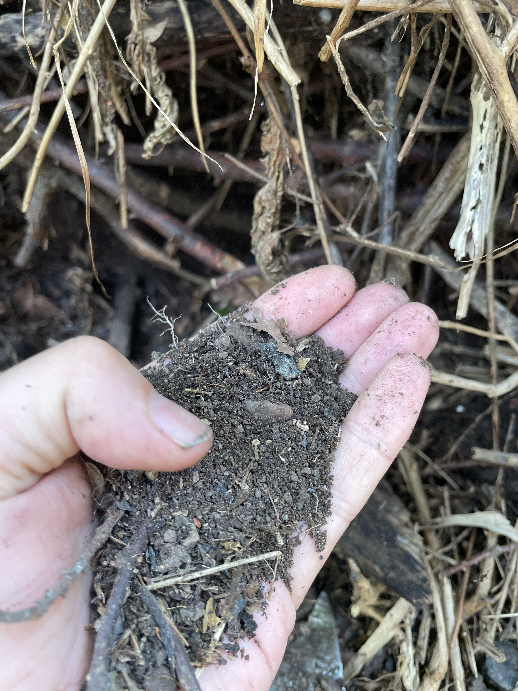
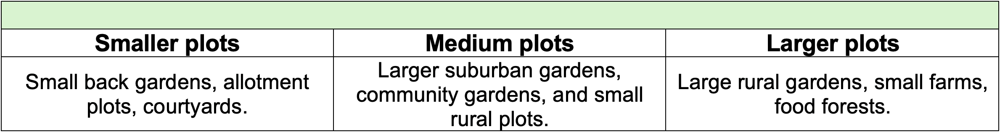
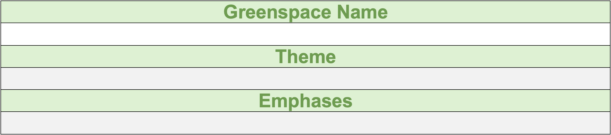
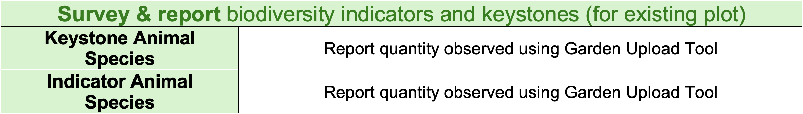
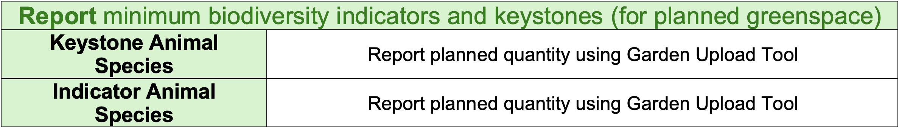
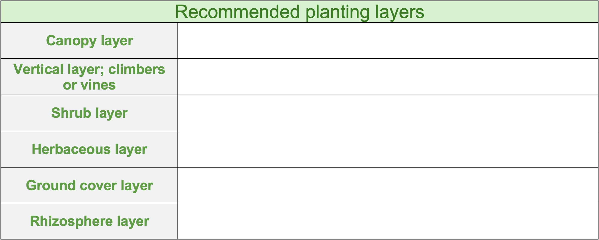
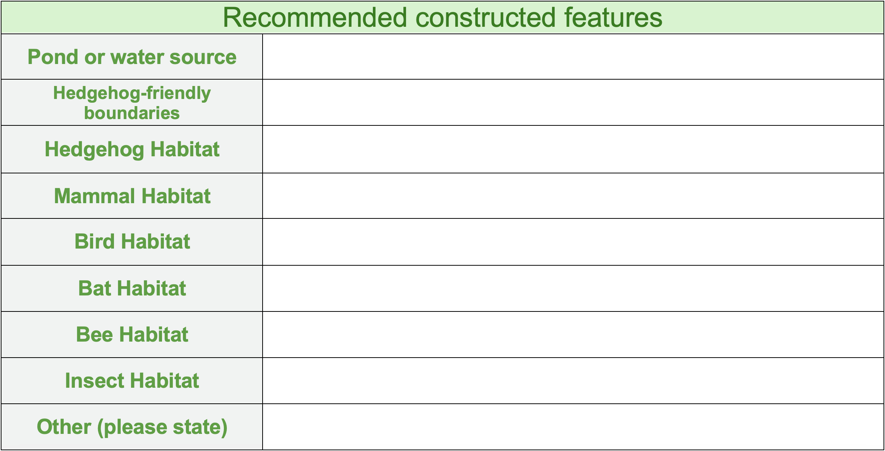
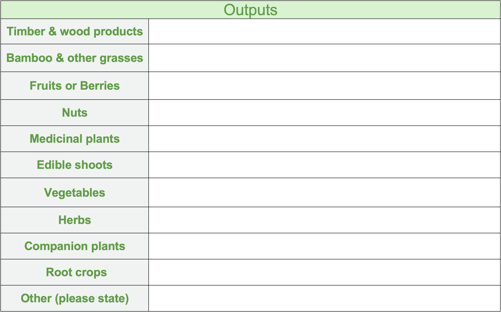
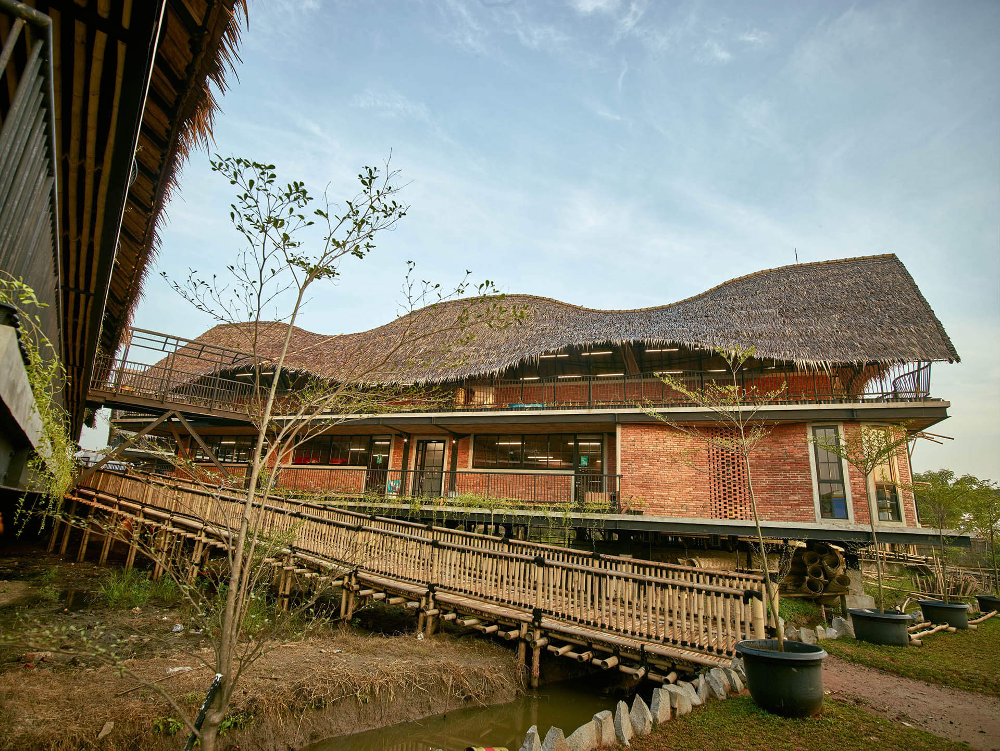
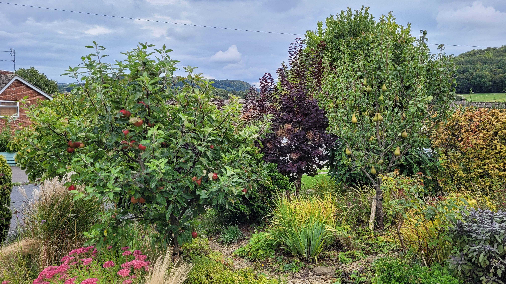
Key Features
- Fully organic growing methods, no synthetic chemicals
- Mixed vegetable beds with seasonal produce
- Soft fruits including gooseberries and other woodland-edge species
- Wildlife-friendly planting integrated throughout
- Woodland soil enrichment and natural composting
- Habitat features for insects, birds, and small mammals
- Seasonal succession planting for year-round productivity